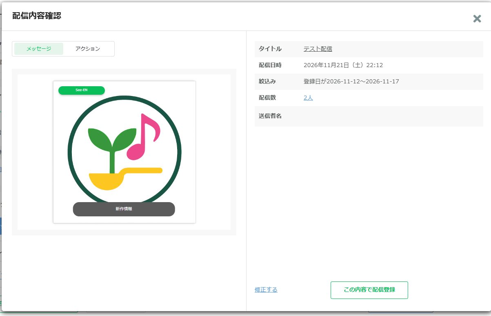
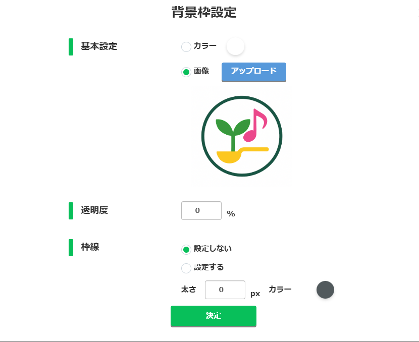
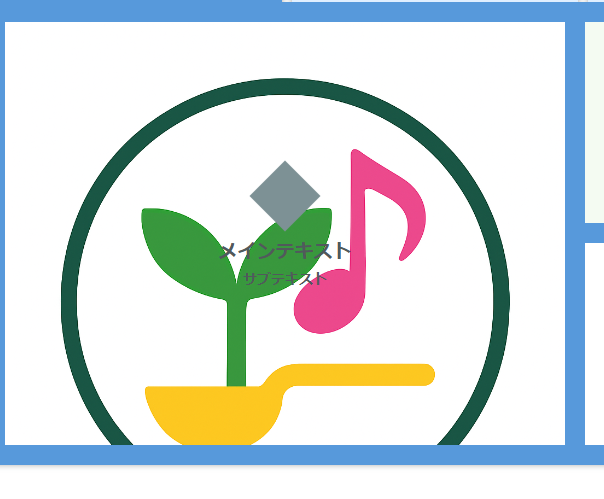

1. 要約（3分で読める版）
最もおすすめ：A「配信前セーフティチェック」
L Messageは設定が細かく、一度送ると取り消せない「配信」が最もミスの影響が大きい操作です。今ある「配信内容確認」画面に、「リンクは生きているか・差し込み文字は空欄でないか・何通消費するか」を自動で点検する欄を足すことで、ミスによる信頼低下を防ぎ、担当者も安心して使えます。約4.5人日と小さく始められ、既存の配信機能を壊しにくい点も理由です。
| 順位 | 提案 | ユーザー価値 | 工数 | 既存との整合 | 総合点 |
|---|---|---|---|---|---|
| 1 | A：配信前セーフティチェック | ★★★★☆ | 4.5人日 | ★★★★★ | 4.50 |
| 2 | C：配信通数の見積り＆上限アラート | ★★★★☆ | 4人日 | ★★★★★ | 4.50 |
| 3 | G：画像の切り取り位置の指定と推奨サイズ表示 | ★★★★☆ | 5人日 | ★★★★★ | 4.25 |
| 4 | E：ブロック増加の原因分析 | ★★★★☆ | 5人日 | ★★★★☆ | 4.00 |
| 5 | B：目的別セットアップウィザード | ★★★★☆ | 9人日 | ★★★☆☆ | 3.50 |
| 6 | D：A/Bテスト配信 | ★★★☆☆ | 10人日 | ★★★☆☆ | 2.75 |
総合点＝ユーザー価値×50%＋開発コスト（低いほど高得点）×25%＋既存機能との整合×25%（各5点満点）。詳細は「優先順位」の章をご覧ください。
2. 前提：調べた範囲と、読み方の注意
3. 改善提案（優先度順）
以下は優先度の高い順（A→C→G→E→B→D）に並べています。各提案は「課題 → 改善 → 搭載確認 → 実現可能性 → 確認事項」の順です。
配信前セーフティチェック
「送る前に、事故を止める」
UI/UX・機能工数 4.5人日優先度 第1位
1. 課題（何が困るのか）
L Messageには、配信を登録する前に「配信内容確認」画面があり、メッセージ／アクションのプレビュー、配信日時、絞込み条件、配信数（人数）、送信者名を確認できます（実際の管理画面で確認）。一方、LINEでは一度配信が受け付けられると取り消せません。この確認画面は人が目で見て判断するための情報表示で、次のような点は自動では検査されないように見えます。

- リンクが開けるか（期限切れ・間違いURL）
- 「{名前}」などの差し込み文字が空欄にならないか
- 今月の残り通数に収まるか（配信数は「人数」で、通数は出ない）
- 問題がある場合の警告表示（現状は「配信登録」を押せてしまう）
- 責任者による承認
タグの絞り込みを誤り、本来412人に送る告知が全友だち3,214人に届いた。確認画面の配信数に「3,214人」と出ていたが、忙しくて見落とした。さらに、リンク先が期限切れのURLだった──送信後に気づいても取り消せない。
2. 改善内容と方法
今ある確認画面を作り直すのではなく、その画面に「自動チェック欄」を足します。人が見る情報はそのまま残し、システムが先に問題を探して知らせます。
- リンク確認：メッセージ内のURLが開けるかを確認し、開けなければ❌表示
- 差し込み文字の確認：空欄になる友だちが何人いるかを⚠️表示
- 消費通数：「約412通消費／今月の残り588通」（提案Cと共通）
- 対象人数の異常検知：普段より極端に多い（例：全友だち）場合に⚠️表示
- ボタンの制御：❌が残る間は「配信登録」を押せなくする（設定で警告のみにも切替可）
- 承認（オプション）：担当者の配信登録後、責任者が承認して初めて配信
専門用語の補足を開く
- Messaging API
- LINEが公開している、他社サービスがLINEと連携するための窓口。L Messageはこれを使って配信しています。
- マルチキャスト/ナローキャスト
- 特定の相手（絞り込んだ友だち）にまとめて送る配信方法。対象を絞る仕組みがあるため、人数の事前確認と相性が良いです。
- リトライキー（X-Line-Retry-Key）
- 同じ配信リクエストを誤って2回送っても1回しか実行されないようにする、LINE公式の重複防止の仕組み。ダブル送信防止に使えます。
- 非同期処理
- 時間のかかる計算（例：数万人の対象人数の算出）を裏側で行い、画面は先に表示する方式。画面が固まるのを防ぎます。
3. すでにL Messageに搭載済みか？（確認結果）
- 搭載済み配信内容確認画面（プレビュー、日時、絞込み、配信数、送信者名、修正する／配信登録）：実際の管理画面で確認。この提案の土台にします。
- 搭載済みテスト送信・予約配信（公式マニュアルに記載）。
- この画面には無しリンクの死活確認、差し込み文字の検査、消費通数の表示、警告表示とボタン制御、承認フロー：撮影した画面には見当たりませんでした。他の画面にある可能性は引き続き確認が必要です。
4. 実現可能性
| 工程 | 工数 | その工数になる根拠 |
|---|---|---|
| 要件整理 | 0.5人日 | チェック項目の優先順位付け（リンク・差し込み・通数）と、承認フローは今回対象外と合意するための打ち合わせ |
| 設計（画面・処理） | 0.5人日 | 既存の確認画面に「自動チェック欄」を足す設計（新規画面は作らない） |
| 実装 | 2.5人日 | リンク確認1.0／差し込み文字検査0.5／通数・人数異常の表示0.5／警告表示とボタン制御0.5 |
| 簡易テスト | 1人日 | 全員配信・絞込み配信・予約配信で、リンク切れ・空欄のテストデータを使って確認 |
| 合計 | 4.5人日 | 約36時間（1人日=8時間）。バッファ30%を加えると約5.9人日 |
技術的：容易です。既存の確認画面に項目を足す形で、配信処理そのものには手を入れません。リソース的：エンジニア1名で約1週間（実質4.5人日）。承認フロー（役割・通知まで）を入れる場合は別途+5人日が目安です。性能面：リンク確認は外部サイトへのアクセスを伴うため、時間がかかる場合は画面を先に出し、結果を後から表示します。
5. 実装する場合の確認事項
- リンク確認で外部サイトへアクセスしてよいか（セキュリティ・相手サイトへの負荷）
- 差し込み文字の空欄は、友だち情報のどの項目で判定するか
- ❌でボタンを押せなくするか、警告のみで押せるままにするか（運用の自由度とのバランス）
- 「配信数2人」のリンク先に何が表示されるか（実際の仕様を確認し、重複しない表示にする）
- 承認フローの要否（少人数アカウントには不要の可能性）
配信通数の見積り＆上限アラート
「今月あと何通送れる？」が配信前にわかる
機能・パフォーマンス工数 4人日優先度 第2位
1. 課題（何が困るのか）
フリープランは月間配信数1,000通まで、有料プランは無制限（公式料金情報）。加えてLINE公式アカウント側にも別の月間メッセージ上限・従量課金があります。配信は「人数×通数」で消費されますが、配信前に消費量を見積もる画面は公開情報では確認できませんでした。上限に達すると配信できなくなったり、想定外の費用が発生したりします。
友だち800人に3通のメッセージを「今日中に」送る予定。実際は2,400通消費で、フリープランの月間1,000通を超えてしまい、途中から届かない。
2. 改善内容と方法
配信作成画面の右上に常時、「この配信で約◯通消費／今月の残り◯通」を表示します。残りが少ない時は黄色、超えそうな時は赤で警告し、「対象を絞る」「予約日を来月にする」「プランを確認する」の3つの次の行動を提示します。月次で80%に達したら担当者へ通知します。
専門用語の補足を開く
- 配信通数（メッセージ数）
- LINEでは「友だち1人に1吹き出し送る」ごとに1通と数えるのが基本です（複数吹き出しを1回で送ると複数通）。
- クォータ（月間上限）
- LINE公式アカウントのプランごとに決まる月間の無料メッセージ数。上限API（message/quota）で取得できます。
- API（エーピーアイ）
- ソフトウェア同士が情報をやり取りする窓口。ここでは『今月の消費数を教えて』とLINEに問い合わせるために使います。
- 429エラー
- 短時間にリクエストを送りすぎた時にLINEが返す『多すぎます』の合図。大量配信では送る速度の調整が必要です。
3. すでにL Messageに搭載済みか？（確認結果）
- 搭載済みプランごとの上限（フリー1,000通／有料は無制限）の設定自体は搭載・公開されています。
- 要実機確認配信前の消費通数見積りと残数との比較表示、80%到達時のアラート：公開情報・2026年アップデート情報では確認できませんでした。
- 要実機確認ダッシュボードに残り通数を出す機能があるか（実機で確認）。
4. 実現可能性
| 工程 | 工数 | その工数になる根拠 |
|---|---|---|
| 要件整理 | 0.5人日 | 表示場所・警告のしきい値（例：80%）の決定のみで済む小さな機能のため |
| 設計（画面・処理） | 0.5人日 | 表示パーツ1つと、通数取得の呼び出し方の設計 |
| 実装 | 2.5人日 | 消費量の取得処理1.0／見積りロジック（人数×吹き出し数）0.5／表示・警告UI 0.5／通知0.5 |
| 簡易テスト | 0.5人日 | 上限間際・上限超過・上限なしプランの3パターンを確認 |
| 合計 | 4人日 | 約32時間（1人日=8時間）。バッファ30%を加えると約5.2人日 |
技術的：容易です。LINE公式APIに今月の上限と消費数を取得する窓口が用意されており、新しい仕組みは不要です。リソース的：エンジニア1名で約0.5週間。最小コストで「事故防止」の価値が出るため、費用対効果が最も高い部類です。
5. 実装する場合の確認事項
- フリープラン上限（L Message側）とLINE公式アカウント側上限、どちらを優先して見せるか（両方の表示が親切）
- 見積りに含めるのは吹き出し数か、リッチメッセージ等の種別ごとか
- 有料プランの顧客にも表示して不快にならないか（表示のオン/オフ設定）
- 通知の宛先（管理者のみ？スタッフ全員？）と通知手段（管理画面・メール・アプリ）
画像の切り取り位置の指定と推奨サイズ表示
「見せたい部分が切れる」を、画面上で直せるように
UI/UX（実際に触って発見）工数 5人日優先度 第3位
1. 課題（何が困るのか）
ご自身で実際に管理画面を操作して見つけた課題です。「背景枠設定」の画面では、画像をアップロードできますが、設定できるのは透明度と枠線だけで、画像のどの部分を使うか（切り取り位置・拡大縮小）を選ぶ項目が見当たりません。また、推奨の画像サイズも画面上で説明されていません。結果として、枠の縦横比と合わない画像をアップロードすると、見せたい中央部分が欠けた状態で表示されます（下の実画面を参照）。


※ 原因は画像を枠いっぱいに敷き詰めて余りを切る表示方式によるものと推測しています（実装は未確認）。
お店のロゴを背景にしたメニューを作りたいが、ロゴの下半分が切れてしまう。直すために、画像編集ソフトでサイズを調べ直して作り直し、再アップロードして確認する──を何度も繰り返すことになる。デザインに慣れていない担当者ほど、ここで挫折しやすい。
2. 改善内容と方法
次の3つを、既存の「背景枠設定」画面に足します。新しい画面を作り直すのではなく、今ある画面の手前に補助を追加する形です。
- 推奨サイズの表示：アップロードボタンの横に「推奨：◯×◯px（正方形／横長など）」と、見本図を表示。サイズが合わない画像には警告を出す。
- 切り取り位置の選択：アップロード後に切り取り枠をドラッグで動かし、スライダーで拡大縮小できる。枠の外側は暗く表示して、使われる範囲が一目で分かる。
- 仕上がりプレビュー：文字やアイコンを重ねた状態の見た目をその場で確認でき、元画像は保持されるので、後から何度でも調整し直せる。
専門用語の補足を開く
- トリミング（切り取り）
- 画像のうち使う範囲だけを選んで切り出すこと。
- 縦横比（アスペクト比）
- 画像の横と縦の長さの比率。枠と画像の比率が違うと、余った部分が切れたり余白が出たりします。
- プレビュー
- 決定する前に、実際の仕上がりを確認できる表示。
- 解像度
- 画像の細かさ。小さすぎる画像を拡大するとぼやけるため、最小サイズの警告が必要です。
3. すでにL Messageに搭載済みか？（確認結果）
- 搭載済み画像のアップロード、透明度、枠線の設定（実際の管理画面のスクリーンショットで確認）。
- この画面には無し切り取り位置の指定、拡大縮小、推奨サイズの表示：撮影した画面には見当たりませんでした。他の画面や機能にある可能性は、さらに確認が必要です。
4. 実現可能性
| 工程 | 工数 | その工数になる根拠 |
|---|---|---|
| 要件整理 | 0.5人日 | 対象の画面を「背景枠設定」から始めると決め、推奨サイズの表記を整理するだけの小さな要件のため |
| 設計（画面・処理） | 0.5人日 | 切り取り枠の操作（ドラッグ・拡大縮小）の画面設計と、保存データ（座標）の設計 |
| 実装 | 3人日 | 切り取り操作UI 1.5／推奨サイズの表示と警告 0.5／座標の保存と表示への反映 0.5／元画像の保持 0.5 |
| 簡易テスト | 1人日 | 縦長・横長・正方形・小さい画像、PNG/JPEG、保存済みデータの表示確認 |
| 合計 | 5人日 | 約40時間（1人日=8時間）。バッファ30%を加えると約6.5人日 |
技術的：容易です。ブラウザ上で画像を切り取る機能は、公開されている部品（ライブラリ）を使えば短期間で作れます（利用条件の確認は必要）。保存は切り取り範囲の座標を持つだけで済み、既存の画像データや配信機能には影響しません。リソース的：エンジニア1名で約1週間。注意：パソコン前提の画面のため、スマホ対応は今回の対象外としてよいか確認が必要です。
5. 実装する場合の確認事項
- 推奨サイズの根拠（LINE側の画像仕様と、画面ごとの枠の大きさ）と、アップロードできる容量・形式の上限
- 切り取り結果の保存方式（座標だけ保存するか、切り出した画像を保存するか）
- すでに設定済みのデータは従来どおりの表示のままにするか
- 同じ課題が他の画像アップロード画面（リッチメニューなど）にもあるか、対象をどこまで広げるか
- ロゴなど顧客の画像の著作権・個人情報の取り扱い（保存期間を含む）
ブロック増加の原因分析
「いつ・どの配信で減ったか」を見える化
機能・分析工数 5人日優先度 第4位
1. 課題（何が困るのか）
LINEでは配信を多くしすぎると友だちにブロックされることが大きな課題です。L MessageにはURL分析（クリック率の計測）や、友だち詳細でのタグ履歴・アクション履歴がありますが、「どの配信の後にブロックが増えたか」を配信単位で確認する機能は、公開情報では確認できませんでした。原因が分からなければ改善できません。
先週の火曜に友だちが一気に40人減った。その日は3回配信している。どれが原因か分からず、結局すべての配信を減らす判断をして売上も下がった。
2. 改善内容と方法
管理画面に「友だち数・ブロック数の日別グラフ」を作り、同じ時間軸に配信のタイミングを点で重ねます。さらに配信ごとに「配信後24時間のブロック数」を表示し、ブロックが多かった配信に印を付けます。「配信内容・時間帯・頻度」の見直しヒントも文章で提示します（例：『朝の配信後にブロックが多い傾向があります』）。
専門用語の補足を開く
- ブロック
- 友だちがトークをブロックし、以降メッセージが届かなくなる状態。ブロック率が高いと配信の効果が落ちます。
- Insight API（インサイトAPI）
- LINE公式が提供する、友だち数・ブロック数などの統計を取得する窓口。日別の友だち数/ブロック数を取得できます。
- バッチ処理
- 毎日決まった時刻に自動でデータを取りに行って保存する仕組み。リアルタイムではなく1日1回の更新で十分なケースに向いています。
- 相関
- 「Aが起きた後にBが増える」という関係。偶然の可能性もあるため、表示では断定せず『傾向』と表現します。
3. すでにL Messageに搭載済みか？（確認結果）
- 搭載済みURL分析（クリック率の測定）：公式マニュアルに記載。
- 搭載済み友だち詳細のタグ履歴・アクション履歴の確認（2026年6月アップデート情報）。
- 要実機確認ブロック数と配信履歴を同じ時間軸に重ねる表示／配信単位のブロック分析：確認できませんでした。LINE公式アカウント管理画面側の分析で日別ブロック数は見られるため、差別化できる範囲を実機で確認する必要があります。
4. 実現可能性
| 工程 | 工数 | その工数になる根拠 |
|---|---|---|
| 要件整理 | 0.5人日 | 表示する指標（日別ブロック、配信後24h）と、見せ方の合意 |
| 設計（画面・処理） | 0.5人日 | データ保存の設計（日次で蓄積）とグラフ画面のワイヤーフレーム |
| 実装 | 3.5人日 | 日次データ取得バッチ1.0／配信履歴との突合1.0／グラフUI 1.0／傾向メッセージ0.5 |
| 簡易テスト | 0.5人日 | データ欠損日・配信ゼロ日・大量配信日の表示確認 |
| 合計 | 5人日 | 約40時間（1人日=8時間）。バッファ30%を加えると約6.5人日 |
技術的：可能です。LINEが提供する統計の窓口から日別データを取得でき、L Message側が持つ配信履歴と日付で突き合わせるだけです。制約：統計は1日単位のため、「配信直後の時間単位」の分析はできません。また、友だち数が少ないアカウントでは統計が出ない場合があります（要確認）。
5. 実装する場合の確認事項
- LINE統計データが取得できる最低友だち数（少人数では非表示となるため、対象外の表示を設計）
- 過去データはどこまで遡って取得できるか
- ブロックされた友だちの個人情報の扱い（LINE規約・個人情報保護の観点で、個人特定はしない設計にする）
- 『原因』と断定せず『傾向』と表示する表現の合意
目的別セットアップウィザード
「何から設定すればいい？」をなくす
UI/UX工数 9人日優先度 第5位
1. 課題（何が困るのか）
L Messageは多機能な反面、細かな設定項目が多く、パソコンでの操作を前提にしています（課題文の記載どおり）。初めて使う担当者は、ステップ配信・リッチメニュー・タグ・フォームのどこから手を付けるか迷いやすく、設定漏れのまま運用が始まるリスクがあります。公式マニュアルや動画は充実していますが、自分の目的に合う順番で案内する仕組みは確認できませんでした。
美容院の予約を増やしたい店長が登録したが、まず何を作ればよいか分からず、友だち追加時のあいさつメッセージだけ設定して数週間放置してしまう。
2. 改善内容と方法
登録直後に「何を達成したいですか？」と質問し（例：予約を増やす／来店を促す／問い合わせを減らす）、選んだ目的に合わせてやることリストとテンプレートの自動作成を提供します。完了した項目にチェックが付く進捗バーを表示し、各項目から該当設定画面と解説動画へジャンプできます。
専門用語の補足を開く
- オンボーディング
- 新しく使い始めた人が迷わず最初の成果にたどり着けるようにする案内の仕組み。
- ウィザード
- 質問に答えながら順番に進めていく、案内付きの設定画面。
- ステップ配信
- 友だち追加から◯日後、のように、あらかじめ決めた順番・間隔でメッセージを自動配信する機能。
- リッチメニュー
- トーク画面の下部に表示される、画像付きのメニュー。ボタンで予約ページなどに誘導できます。
3. すでにL Messageに搭載済みか？（確認結果）
- 搭載済み公式マニュアル・動画・ステップ配信等の操作解説（lme.jp/manual）。
- 要実機確認目的別のセットアップウィザード、進捗バー、テンプレート自動作成：公開情報では確認できませんでした。登録直後の画面を実機で確認する必要があります。
4. 実現可能性
| 工程 | 工数 | その工数になる根拠 |
|---|---|---|
| 要件整理 | 1人日 | 対象とする目的の絞り込み（最初は3パターン）と、完了判定の定義 |
| 設計（画面・処理） | 1.5人日 | 質問画面・やることリスト・進捗バーの3画面と、テンプレートが既存の設定画面とどう結び付くかの設計 |
| 実装 | 5人日 | ウィザード画面2.0／進捗の保存と完了判定1.5／テンプレート自動作成1.0／既存画面へのリンク0.5 |
| 簡易テスト | 1.5人日 | 3パターン×（新規・途中離脱・再開）の動作確認 |
| 合計 | 9人日 | 約72時間（1人日=8時間）。バッファ30%を加えると約11.7人日 |
技術的：可能です。新しい仕組みというより、既存機能を目的順に並べ替えて案内する画面です。リソース的：画面担当＋サーバー担当で約1〜2週間。注意：テンプレートの中身（文面）の作成は工数に含めていません。業種ごとの文面づくりは別途コンテンツ作成の工数がかかります。
5. 実装する場合の確認事項
- 最初に対応する目的の優先順位（実際の顧客の業種・目的の割合をデータで確認）
- 既存ユーザーにも表示するか（新規のみ／全員）
- ウィザードを後から再表示・スキップできるか
- テンプレート文面の著作権・表現のチェック体制
A/Bテスト配信
「どちらの文面が良いか」を勘ではなく数字で
機能工数 10人日優先度 第6位
1. 課題（何が困るのか）
配信文面の良し悪しは、実際に送ってみないと分かりません。URL分析で結果は測れますが、2つの案を同時に比べる仕組みは公開情報の範囲では確認できませんでした。そのため、「どちらが良いか」は担当者の経験と勘に頼りがちです。
クーポン配信の文面を「10%OFF」と「500円引き」のどちらにするか迷い、結局前回と同じ文面を全員に送ってしまった。実は反応が2倍違ったかもしれない。
2. 改善内容と方法
配信作成画面で文面AとBを同時に作成できるようにします。まず対象のうち一部（例：各10%）にそれぞれ送り、一定時間後にクリック率を自動比較。成績の良かった方を、残りの80%に自動配信します。どちらが勝ったかは、グラフと一言コメント（『Aが1.4倍クリックされました』）で表示します。
専門用語の補足を開く
- A/Bテスト
- 2つの案をランダムに分けた人に送り、結果の良い方を選ぶ手法。
- クリック率
- メッセージ内のURLを開いた人の割合。URL分析で測定できます。
- 統計的有意差
- 結果の違いが『偶然ではなさそう』と言える程度の差のこと。友だち数が少ないと差が出ても偶然の可能性が高く、判定を保留する必要があります。
- ランダム振り分け
- 対象者を無作為にA群・B群へ分けること。偏りをなくし、公平に比較するために必要です。
3. すでにL Messageに搭載済みか？（確認結果）
- 搭載済みURL分析によるクリック率の測定は搭載済みで、この提案の土台として使えます。
- 要実機確認A/Bテスト配信（振り分けと自動勝者配信）：公開情報・2026年のアップデート情報では確認できませんでした。
4. 実現可能性
| 工程 | 工数 | その工数になる根拠 |
|---|---|---|
| 要件整理 | 1人日 | 対象人数の最低ライン、比較する指標（クリック率）、待ち時間の決め方の整理 |
| 設計（画面・処理） | 1人日 | 振り分けルールと、勝者を自動配信する流れの設計 |
| 実装 | 6人日 | A/B作成UI 2.0／振り分け処理1.0／集計・勝敗判定1.5／勝者の自動配信1.0／結果表示0.5 |
| 簡易テスト | 2人日 | 振り分けの偏り確認、少人数時の保留動作、途中停止の動作確認（既存配信との整合に時間がかかる） |
| 合計 | 10人日 | 約80時間（1人日=8時間）。バッファ30%を加えると約13.0人日 |
技術的：可能ですが、他案より重い。既存の配信処理に「分割して配信し、結果で後続配信を決める」流れを足すため、予約配信・URL分析との整合確認が必要です。効果の前提：友だち数が少ないアカウントでは差が検出しにくく、価値が出る顧客が限られます。
5. 実装する場合の確認事項
- 利用顧客の友だち数分布（A/Bに十分な人数のアカウント割合）
- 勝者判定の基準（クリック率のみで良いか／購入などの成果まで見るか）
- 配信通数が増えないか（試験配信分も消費）
- LINE公式のガイドライン上、同一内容の分割配信に問題がないか
4. 優先順位と最推奨案
工数の内訳比較
判断の理由
- 第1位 A（最推奨）：取り消せない配信のミスを、既存の確認画面を土台に自動で防ぐ。画面を作り直さず項目を足すだけなので、既存機能との整合が良い。Cとは同点だが、Cの通数表示を取り込む「器」になるため最推奨とする。
- 第2位 C：最小コスト（4人日）で効果が出る。Aの確認画面にそのまま組み込めるため、A・Cは同点で、同時に実施するのが効率的（Aの確認画面にCの通数表示を載せる）。
- 第3位 G：実際に操作して見つけた課題で、リッチメニューの見栄えに直結。既存画面への追加で済み低コスト。影響範囲は配信ミス防止（A）よりは限定的。
- 第4位 E：ブロックという重要な成果指標を扱う。ただしLINE統計が日単位のため分析の深さに限界がある。
- 第5位 B：新規ユーザーの定着に効くが、画面数が多く工数が大きい。業種別のテンプレート作成も別途必要。
- 第6位 D：効果は大きくなり得るが、友だち数が多いアカウントに限られ、既存配信との整合確認が重い。
推奨ロードマップ
| フェーズ | 内容 | 工数目安 |
|---|---|---|
| 1（約2週間） | A（自動チェック欄）＋ C（通数見積り）を同時に実施。既存の確認画面に組み込む。 | 約8.5人日 |
| 2（約2週間） | E：ブロック数の可視化（5人日）と G：画像の切り取り位置指定（5人日）。Gは既存の画面への小さな追加で、独立して進められる。 | 約10人日 |
| 3（以降） | 利用状況を見て B または D、承認フロー拡張（+5人日）を選択。 | 要判断 |
5. 依頼者の立場で、追加で入れておきたい視点
導入前に共通して確認したいこと
- 現在の利用顧客の規模（友だち数の分布）と、配信ミスに関する実際の問い合わせ件数
- 開発体制（担当者数・使用技術・リリース頻度）と、既存の優先課題との兼ね合い
- 管理画面の実機確認で「搭載済み」と判明した機能の有無（本資料の「要実機確認」項目）
- スマホアプリ側にも反映が必要か（チャット対応等はスマホ対応のため、確認画面の対応範囲を決める）
6. 精査メモ（AI活用と提出者の責任範囲）
本資料は、AIで情報収集と下書きを行い、内容は提出者が確認・編集する前提で作成しています。確認した範囲と限界を明記します。
参照：L Message URL分析マニュアル／テスト送信マニュアル／2026年9月アップデート／有料プラン／Messaging APIリファレンス／APIリトライ